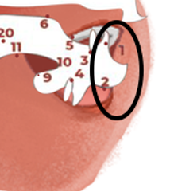
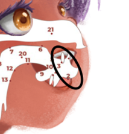
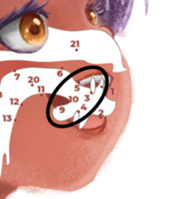
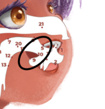
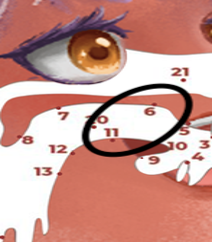
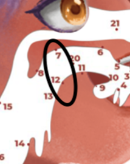
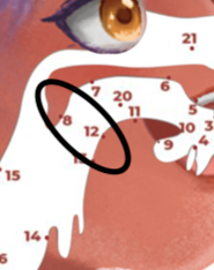
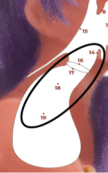
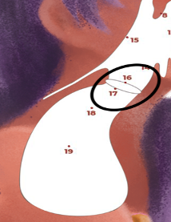

Alat ucap adalah organ tubuh manusia yang berfungsi dalam
pengucapan bunyi bahasa. Bunyi bahasa, atau fon, merupakan terjemahan
dari istilah bahasa Inggris "phone" (bunyi). Bunyi bahasa berhubungan
dengan getaran udara, yang terjadi ketika dua benda atau lebih bergesekan
atau berbenturan. Organ-organ yang terlibat meliputi paru-paru, laring,
faring, rongga hidung, rongga mulut, bibir, gigi, lidah, alveolum, palatum,
velum, dan uvula.
음성기관은 사람의 몸에서 언어 소리를 발음하는 데 기능하는
기관입니다. "소리" 또는 "음성"이라는 용어는 영어 단어 "phone" 에서
유래되었으며, 언어 소리는 공기의 진동을 포함합니다. 이 소리는 두
물체가 서로 이동하거나 충돌함으로써 발생합니다. 관련된 기관에는
폐, 후두, 인후, 코 동굴, 입 동굴, 입술, 이, 혀, 치아, 알베올룸, 입천장,
연자막, 푸석, 입구가 포함됩니다.
Berikut adalah keterangan nama- nama alat ucap dan istilah lain yang
berasal dari bahasa Latin. Istilah ini biasanya digunakan dalam bidang
ilmu bunyi (fonologi).
다음은 라틴어에서 유래된 음성 도구의 이름과 기타 용어에 대한
설명입니다. 이 용어는 일반적으로 소리 과학(음운론) 분야에서
사용됩니다.
| No | Nama Alat Ucap | Istilah | Bahasa Korea |
|---|---|---|---|
| 1 | Bibir atas | labial | 윗입술 |
| 2 | Bibir bawah | labial | 아랫입술 |
| 3 | Gigi atas | dental | 윗니 |
| 4 | Gigi bawah | dental | 아랫니 |
| 5 | Gusi | Alveolar | 잇몸 |
| 6 | Langit-langit keras | Palatal | 경구개 |
| 7 | Langit-langit lunak | Velar | 연구개 |
| 8 | Anak tekak | Uvular | 목젖 |
| 9 | Ujung lidah | Apikal | 혀끝 |
| 10 | Daun lidah | Laminal | 혀날 |
| 11 | Tengah lidah | Medial | 혀 중간 |
| 12 | Pangkal lidah | Dorsal | 혀뿌리 |
| 13 | Akar lidah | Radikal | 혀근 |
| 14 | Katup pangkal tenggorok | Epiglottis | 후두개 |
| 15 | Rongga kerongkongan | Faring | 인두 |
| 16 | Pita suara | Vocal cords | 성대 |
| 17 | Glottal | Glottal | 성문 |
| 18 | Pangkal tenggorok | Laring | 후두 |
| 19 | Paru-paru | Lungs | 폐 |
| 20 | Mulut | Oral | 입 |
| 21 | Hidung | Nasal | 코 |
Ketika manusia berbicara, berbagai alat ucap saling bekerja sama. Setiap
alat ucap bergerak secara bersamaan untuk menghasilkan bunyi bahasa. Proses
ini disebut mekanisme artikulasi. Perhatikan tabel berikut! Tabel ini
menunjukkan cara menggerakkan alat ucap untuk menghasilkan bunyi huruf-
huruf dalam Bahasa Indonesia dengan benar. Pelajari tabel ini agar Anda dapat
melafalkan bunyi Bahasa Indonesia dengan tepat.
인간이 말할 때 다양한 언어 기관이 함께 작동합니다. 각 언어
기관은 동시에 움직여 언어 소리를 생성합니다. 이 과정을 관절
메커니즘이라고 합니다. 다음 표를 주목하세요! 이 표는 인도네시아어
문자의 소리를 올바르게 생성하기 위해 음성 장치를 움직이는 방법을
보여줍니다. 인도네시아어 소리를 올바르게 발음하려면 이 표를
공부하세요.
| Gambar | Mekanisme Artikulasi | Bunyi yang Dihasilkan | Nama Bunyi | Contoh Kata |
|---|---|---|---|---|
|  | Bibir bawah (2) menyentuh bibir atas (1) 입술 아래 (2)가 입술 위 (1)에 닿음 |
[b] [p] [m] [w] |
Bilabial | [bagi] [pagi] [mata] [warna] |
|  | Bibir bawah (2) menyentuh gigi atas (3) 입술 아래 (2)가 윗니 (3)에 닿음 |
[f] [v] |
Labio-dental | [foto] [vakum] |
|  | Ujung lidah (9) menyentuh gigi atas (3) 혀 끝 (9)이 윗니 (3)에 닿음 |
[t] [d] [n] |
Apiko-dental | [pintu] [pada] [minta] |
|  | Ujung lidah (9) menyentuh gusi (5) 혀 끝 (9)이 잇몸 (5)에 닿음 |
[t] [d] [n] [z] |
Apiko-alveolar | [tua] [dua] [nasi] [zat] |
|  | Tengah lidah (11) menyentuh langit-langit keras (6) 혀 중앙 (11)이 경락구 (6)에 닿음 |
[c] [j] [ῆ] [š] |
Lamino-palatal | [cari] [jari] [nyala] [syukur] |
|  | Pangkal lidah (12) menyentuh langit-langit lunak (7) 혀 근위 (12)가 고구마 천장 (7)에 닿음 |
[k] [g] [x] [ŋ] |
Dorso-velar | [kaki] [gigi] [khasiat] [bingung] |
|  | Pangkal lidah (12) menyentuh anak tekak (8) 혀 근위 (12)가 인두 (8)에 닿음 |
[q] [r] |
Dorso-uvular | [Quran] [rumah] |
|  | Udara yang keluar dari paru-par u (19) digetarkan ke tenggorokan 폐에서 나오는 공기 (19)가 목에 진동함 |
[h] | Laringal | [hari] [hati] |
|  | Pita suara (16) dirapatkan sehingga menutup glotis (17) 목소리 줄 (16)이 조화되어 글로티스 (17)를 닫음 |
[?] | Glotal | /kakak/ [kaka?] |
Dalam bahasa Indonesia, ada 26 huruf. Terdapat 5 huruf vokal dan 21 huruf konsonan.
인도네시아어에는 26개의 글자가 있습니다. 모음은 5개, 자음은 21개입니다.
| Alfabet Bahasa Indonesia | ||||
|---|---|---|---|---|
| [a] | [f] | [k] | [p] | [u] |
| [b] | [g] | [l] | [q] | [v] |
| [c] | [h] | [m] | [r] | [w] |
| [d] | [i] | [n] | [s] | [x] |
| [e] | [j] | [o] | [t] | [y] |
| [z] | ||||
Dalam bahasa Indonesia terdapat 5 huruf vokal, yaitu a, i, u, e, dan o.
Namun huruf /e/ memiliki 3 jenis bunyi yaitu [e], [ə], dan [ɛ].
인도네시아어에는 a, i, u, e, o 라는 5 개의 모음이 있습니다. 그러나 문자
/e/에는 [e], [ə], [ɛ]의 세 가지 유형의 소리가 있습니다.
| No | Huruf | Bunyi Huruf | Simbol Fonetik | Contoh | Suara | |
|---|---|---|---|---|---|---|
| Kapital | NonKapital | |||||
| 1. | A | a | [a] | /a/ | Agar [ɑː.ɡɑːr] |
|
| 2. | I | i | [i] | /i/ | Ikan Ikan[i.kan] |
|
| 3. | U | u | [u] | /u/ | Uang [u.aŋ] |
|
| 4. | E | e | [e] | /e/ | Enak [e.nak] |
|
| [ə] | /ə/ | Erat [ərat] |
||||
| [ɛ] | /ɛ/ | Peta [Pɛta] |
||||
| 5. | O | o | [o] | /o/ | Toko [toko] |
|
| [ɔ] | /ɔ/ | Orang [ɔ.rɑŋ] |
||||
Dalam bahasa Indonesia terdapat 21 huruf konsonan, lihat tabel berikut!
인도네시아어에는 자음 21 개가 있습니다. 다음 표를 참조하세요!
| No | Huruf | Bunyi Huruf | Simbol Fonetik | Kata | Bunyi | Suara | |
|---|---|---|---|---|---|---|---|
| Kapital | NonKapital | ||||||
| 1. | B | b | [be] | /b/ | Bahasa | [baha.sa] | |
| 2. | C | c | [tʃe] | /c/ | Cuci | [tʃu.tʃi] | |
| 3. | D | d | [de] | /d/ | Diam | [di.am] | |
| 4. | F | f | [ɛf] | /f/ | Fakta | [fak.ta] | |
| 5. | G | g | [ge] | /g/ | Gaji | [ga.dʒi] | |
| 6. | H | h | [ha] | /h/ | Halaman | [haˈla.man] | |
| 7. | J | j | [dʒe] | /dʒ/ | Jujur | [dʒu.dʒur] | |
| 8. | K | k | [ka] | /k/ | Kunci | [kun.tʃi] | |
| 9. | L | l | [el] | /l/ | Lama | [la.ma] | |
| 10. | M | m | [em] | /m/ | Mandi | [man.di] | |
| 11. | N | n | [en] | /n/ | Naik | [nai̯k] | |
| 12. | P | p | [pe] | /p/ | Paham | [pa.ham] | |
| 13. | Q | q | [ki] | /k/ | Quran | [kuˈran] | |
| 14. | R | r | [ɛr] | /r/ | Rumah | [ru.mah] | |
| 15. | S | s | [ɛs] | /s/ | Sekolah | [se.ko.lah] | |
| 16. | T | t | [te] | /t/ | Tidur | [ti.dur] | |
| 17. | V | v | [ve] | /v/ | Variasi | [va.riˈa.si] | |
| 18. | W | w | [we] | /w/ | Waktu | [wa.ktu] | |
| 19. | X | x | [eks] | /ks/ | Xilofon | [ksiloˈfon] | |
| 20. | Y | y | [ye] | /j/ | Yakin | [jakin] | |
| 21. | Z | z | [zɛt] | /z/ | Zaman | [za.man] | |
Diftong adalah bunyi vokal rangkap. Dalam bahasa Indonesia ada 4 diftong, yaitu ai,
au,oi, dan ei.
딉토읍은 이중 모음 소리입니다. 인도네시아어에는 ai, au, oi, dan ei 의 네 가지
딉토읍이 있습니다.
| Diftong | Kata | Bunyi | Suara |
|---|---|---|---|
| ai | Sampai | [sampai] | |
| Balai | [balai] | ||
| Pandai | [pandai] | ||
| Pantai | [pantai] | ||
| au | Kau | [kau] | |
| Saudara | [saudara] | ||
| Kalau | [kalau] | ||
| Pulau | [pulau] | ||
| oi | Konvoi | [konvoi] | |
| Boikot | [boikot] | ||
| ei | Survei | [survei] |
Dalam bahasa Indonesia terdapat gabungan huruf konsonan, yaitu ny, ng, kh, dan sy.
인도네시아어에는 자음 조합이 있습니다. 그 중에는 ny, ng, kh, sy, sw 등이
있습니다.
| Kluster | Kata | Bunyi | Suara |
|---|---|---|---|
| ny | Nyata | [ˈɲata] | |
| Nyanyi | [ˈɲaɲi] | ||
| Banyak | [ˈbaɲak] | ||
| Bunyi | [buɲi] | ||
| Tanya | [taɲa] | ||
| Kenyang | [kɛɲaŋ] | ||
| ng | Ngantuk | [ŋantuk] | |
| Ngomong | [ŋomɔŋ] | ||
| Mangga | [maŋga] | ||
| Dinding | [dindiŋ] | ||
| Tangan | [taŋan] | ||
| Siang | [siaŋ] | ||
| kh | Khawatir | [khawaˈtir] | |
| Khas | [khas] | ||
| Khusus | [khusus] | ||
| sy | Syarat | [šarat] | |
| Syukur | [sju.kur] | ||
| Masyarakat | [ma.sja.ra.kat] |